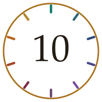

ICU and You · The Top Ten

A month of material, reduced to the ten things worth carrying
Twenty-five new pieces went up this month, across neonatal and postneonatal intensive care. This is what survived the boiling down.
The Top Ten is the absolute distillation — the ten takeaways from everything published as new material in the month. Short, blunt, and chosen for one criterion only: would knowing this change what somebody does? Each links back to the piece it came from if you want the argument behind it.
If you read nothing else from August, read this page. It will take you four minutes.
If the chest is not moving, nothing downstream works.
Compressions, adrenaline and access are all irrelevant until the lungs are being inflated. Mask seal, Reposition, Suction, Open the mouth, Pressure up, Airway alternative — then reassess. Starting compressions before ventilation is effective is not escalation; it is an interruption.
The newborn does not have a cardiac arrest. It has a respiratory arrest with a cardiac ending.
Which tells you where to spend the first ninety seconds. Adult resuscitation instincts — rhythm, drugs, compressions — are the wrong reflexes here, and the babies who do badly are usually the ones whose airway waited.
From Aphorism #35
Oxygen makes the duct-dependent baby worse.
The grey collapsed neonate at day two to fourteen, weak femorals, differential saturations, rising lactate. Oxygen encourages the duct to close and drops pulmonary resistance, stealing further from the systemic circulation. Start alprostadil at 10 ng/kg/min — and a baby whose duct has already shut may need 50 or more.
From Mind Map #31 and Mnemonic #53, COLLAPSED
The cooling window is six hours, and it does not reopen.
Moderate or severe encephalopathy at 35 weeks or more, begun within six hours, to 33–34 °C. The decision has to be made on clinical grounds, which means telephoning the retrieval service before you are certain. Passive cooling begins with turning the warmer off, and that cannot be done retrospectively.
From Superquiz #60
Below 32 weeks, the baby goes into the wrap without being dried.
Polyethylene wrap, thermal mattress, hat, radiant warmer, target 36.5–37.5 °C. Drying first wastes the minutes you are trying to protect. It runs against every instinct, which is exactly why it is worth remembering.
From Superquiz #60
In an infant, the parent is the monitor.
They hold a baseline — how this child was an hour ago — that no instrument in the department has access to. “She is not herself” is an observation, and it belongs in the notes in their own words. Reviews of missed deterioration keep finding the same thing: somebody said something before the numbers moved.
From Aphorism #36 and Nurses' Nest No. 1
A normal blood pressure in a shocked infant is a countdown, not a comfort.
Children hold their pressure by vasoconstriction and tachycardia until compensation fails, then fail abruptly. Hypotension is a late, pre-terminal sign. Judge perfusion instead: capillary refill, skin, conscious state, urine output, and how far up the limb the coolness reaches.
From Mind Map #32 and Superquiz #61
In children the fluid bolus is 10 mL/kg, not 20.
Adult practice carries over unexamined and it is the wrong number. Reassess after every bolus rather than prescribing a total in advance, and be more cautious again where there is cardiac disease or severe malnutrition. Estimate weight under one year as (age in months + 9) ÷ 2 — and get a real one if you possibly can.
From Superquiz #61 and GP Boulevard No. 1
A bruise in a baby who is not yet cruising has almost certainly been inflicted.
Pre-mobile infants do not bruise themselves. Undress and examine fully, document what you find, and escalate the same day. You are a mandatory reporter, the threshold is reasonable suspicion rather than proof, and discomfort is not a reason to look away. It is the reason to look.
From Mind Map #32 and Superquiz #61
Two failed attempts, or ninety seconds without access — go intraosseous.
Marrow is a non-collapsible venous plexus that does not shut down in shock. A trained person is in it in under a minute, and anything you can give intravenously goes through it at the same dose. The common error is not technique but delay. Flush it firmly or nothing will run — and give lignocaine first if the patient is aware, because the flush is severe.
From Procedures No. 1
The wheel could be closed because the nest had opened.
Milan bricked up its foundling wheel in 1868, eighteen years after the first nido opened in the same city. A society stops needing a hole in a wall for anonymous babies at precisely the moment it provides somewhere for their mothers to leave them by daylight and come back. From L'angolo italiano No. 2.
Which of the ten did you already know — and which one changed something?
I am interested in both halves. If nine of these were familiar, tell me, because that tells me where to pitch next month. And if one of them made you go and check something, that is the most useful thing you could send me.
The button opens a reply straight to me. If your device blocks it, write to icuandyou@icloud.com instead.